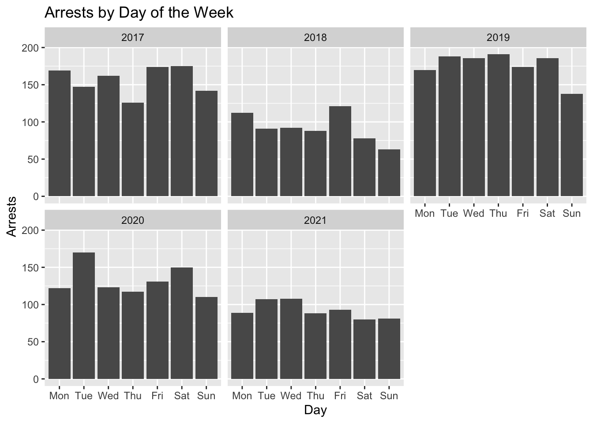
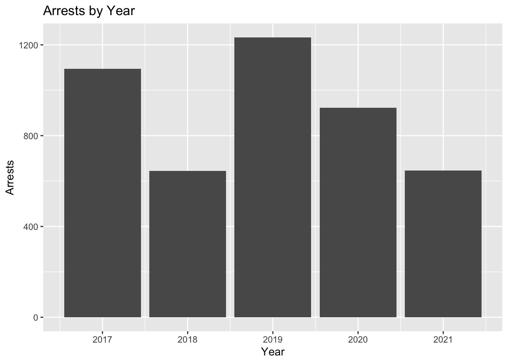
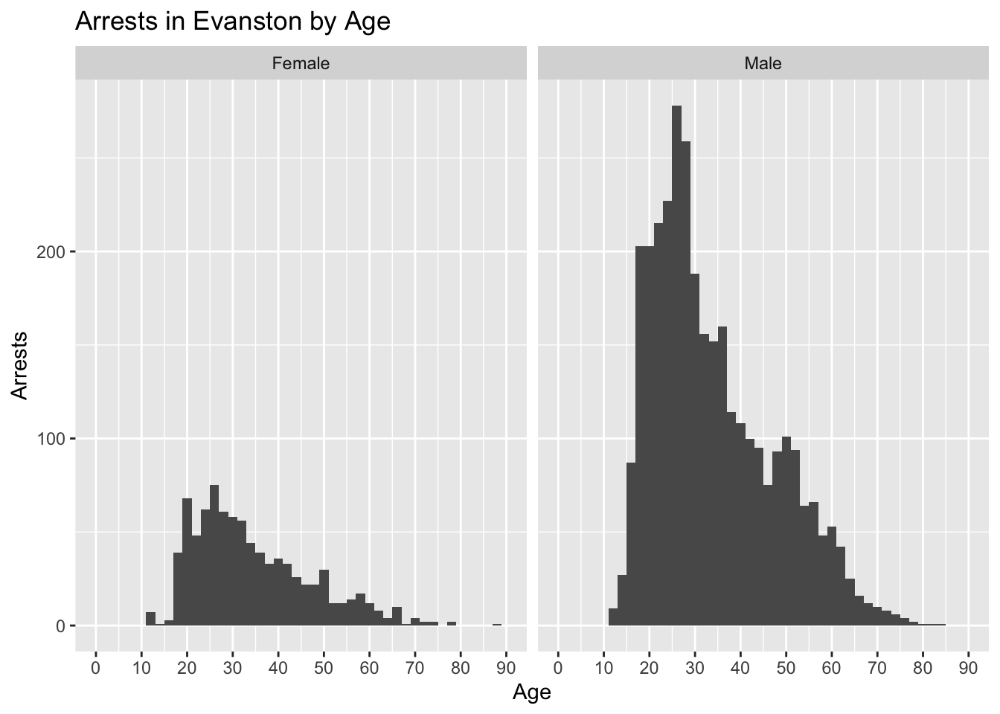
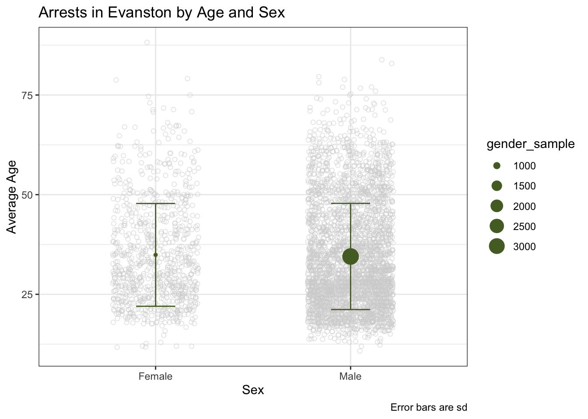

For our next R analysis we decided to focus once again on the city of Evanston, Illinois. This time we are focusing on the demographics of arrests in Evanston using this data set from the City of Evanston database. We wanted to know what races, ages, and genders were the most likely to be arrested in Evanston.
library("RSocrata")
library("tidyverse")
arrests <-
as_tibble(
read.socrata("https://data.cityofevanston.org/resource/25em-v4fn.json")
) %>%
mutate(
day_of_the_week = factor(day_of_the_week),
day_of_the_week = fct_relevel(
day_of_the_week, c(
"Mon",
"Tue",
"Wed",
"Thu",
"Fri",
"Sat",
"Sun"
)
)
) %>%
separate(
col = arrest_date,
into = c("Year", "Month", "Date"),
remove = FALSE
) %>%
mutate(Year = as.numeric(Year),
age = as.numeric(age),
arrest_time = as.numeric(arrest_time),
street_number = as.numeric(street_number)) %>%
filter(Year > 2016)We were interested in how arrests have changed over the years and if arrests happen more on certain days of the week so we graphed those variables here
ggplot(arrests, aes(x = day_of_the_week))+
geom_bar()+
facet_wrap(~Year)+
labs(
x = "Day",
y = "Arrests",
title = "Arrests by Day of the Week"
)
ggplot(arrests, aes(x = Year))+
geom_bar()+
labs(x = "Year", y = "Arrests", title = "Arrests by Year")
arrests %>%
count(Year)## # A tibble: 5 × 2
## Year n
## <dbl> <int>
## 1 2017 1095
## 2 2018 645
## 3 2019 1233
## 4 2020 923
## 5 2021 646ggplot(arrests, aes(x = as.numeric(Month)))+
geom_bar() +
facet_wrap(~Year, nrow = 2)+
labs(x = "Month", y = "Arrests", title = "Arrests by Month for 2017-2021")+
scale_x_continuous(breaks = seq(1,12,1), minor_breaks = NULL)ggplot(arrests, aes(x = as.numeric(Month)))+
geom_bar() +
labs(x = "Month", y = "Arrests", title = "Arrests by Month")+
scale_x_continuous(breaks = seq(1,12,1), minor_breaks = NULL)After graphing this data we were able to see that while there were some outliers, more arrests came in the late spring and summer months. Certain years had a lot more arrests than others and arrests were particularly high in 2017 and 2019. We decided to perform a Chi-squared test to determine if there was a relationship between the month and arrests.
chi_data_df <-
arrests %>%
count(Year, Month) %>%
pivot_wider(
id_cols = Month,
names_from = Year,
values_from = n,
names_prefix = "m_"
)
chi_data_mat <- chi_data_df %>% select(-Month) %>% as.matrix(.)
rownames(chi_data_mat) <- chi_data_df$Month
# chi-square test of independence
chisq.test(chi_data_mat) # significant!##
## Pearson's Chi-squared test
##
## data: chi_data_mat
## X-squared = 205.67, df = 44, p-value < 2.2e-16A significant Chi-squared test suggests that the amount of arrests depends on the month. Such that there are greater arrests in May and June, while December has fewer arrests on average.
Next we decided to plot graphs comparing age, race, and gender of those arrested
ggplot(arrests%>%
filter(complete.cases(sex)), aes(x = age))+
geom_histogram(binwidth = 2)+
coord_cartesian(xlim = c(0,90))+
scale_x_continuous(breaks = seq(0,90,10))+
facet_wrap(~sex)+
labs(
x = "Age",
y = "Arrests",
title = "Arrests in Evanston by Age"
)
arrests_gender <- arrests %>%
filter(complete.cases(sex, age)) %>%
group_by(sex) %>%
summarise(
gender_mean = mean(age),
gender_median = median(age),
gender_sd = sd(age),
gender_sample = n(),
gender_min = min(age),
gender_max = max(age)
)
t.test(age~sex, data = arrests, alternative = "two.sided")##
## Welch Two Sample t-test
##
## data: age by sex
## t = 0.80853, df = 1383.8, p-value = 0.4189
## alternative hypothesis: true difference in means between group Female and group Male is not equal to 0
## 95 percent confidence interval:
## -0.572061 1.374255
## sample estimates:
## mean in group Female mean in group Male
## 34.89005 34.48895We ran a t test to determine if the difference in ages between arrested males and females was statistically significant. The t test showed that it wasn’t statistically significant so we can assume that males and females are arrested at the same ages on average.
arrests_race <- arrests %>%
filter(complete.cases(race, age))%>%
group_by(race) %>%
summarise(
race_mean = mean(age),
race_median = median(age),
race_sd = sd(age),
race_sample = n(),
race_min = min(age),
race_max = max(age)
)
ggplot(arrests_race, aes(x = race, y = race_mean))+
geom_point(
data = arrests%>%filter(complete.cases(race, age)),
aes(y = age),
position = position_jitter(.22),
alpha = 1/2,
color = "lightgrey",
shape = 1)+
geom_errorbar(
aes(ymin = race_mean - race_sd, ymax = race_mean + race_sd),
width = 0.2, color = "darkolivegreen")+
geom_point(aes(size = race_sample), color = "darkolivegreen")+
theme_bw()+
labs(
x = "Race",
y = "Average Age",
caption = "Error bars are sd",
title = "Arrests in Evanston by Age and Race"
)arrests_race_gender <- arrests %>%
group_by(sex, race) %>%
summarise(racesex_mean = mean(age, na.rm = TRUE))
ggplot(arrests_gender, aes(x = sex, y = gender_mean))+
geom_point(
data = arrests%>%filter(complete.cases(race, age)),
aes(y = age),
position = position_jitter(.22),
alpha = 1/2,
color = "lightgrey",
shape = 1)+
geom_errorbar(
aes(ymin = gender_mean - gender_sd, ymax = gender_mean + gender_sd),
width = 0.2, color = "darkolivegreen")+
geom_point(aes(size = gender_sample), color = "darkolivegreen")+
theme_bw()+
labs(
x = "Sex",
y = "Average Age",
caption = "Error bars are sd",
title = "Arrests in Evanston by Age and Sex"
)
arrests_final <- arrests%>%
filter(complete.cases(race, sex))
ggplot(arrests_final, aes(x = age))+
geom_histogram(binwidth = 2)+
coord_cartesian(xlim = c(0,90))+
scale_x_continuous(breaks = seq(0,90,10))+
labs(x = "Age", y = "Arrests")+
facet_grid(race~sex)arrests_racesex <- arrests_final %>%
filter(complete.cases(age))%>%
group_by(race, sex) %>%
summarise(
m = mean(age),
med = median(age),
sd = sd(age),
n = n(),
min = min(age),
max = max(age)
)%>%
ungroup()
ggplot(arrests_racesex, aes(x = race, y = med))+
geom_point(
data = arrests_final,
aes(y = age),
position = position_jitter(.22),
alpha = 1/2,
color = "lightgrey",
shape = 1)+
geom_errorbar(
aes(ymin = med - sd, ymax = med + sd),
width = 0.2, color = "darkolivegreen")+
geom_point(aes(size = n), color = "darkolivegreen")+
theme_bw()+
labs(
x = "Race",
y = "Median Age",
caption = "Error bars are sd",
title = "Arrests in Evanston by Race, Sex, and Age"
)+
facet_wrap(~sex)After graphing these variables we decided to see if the difference in ages between black and white arrests was statistically significant.
arrests_bwmale <- arrests_final%>%
filter(complete.cases(age))%>%
filter(sex == "Male", race %in% c("White", "Black"))
t.test(age~race, data = arrests_bwmale, alternative = "two.sided")##
## Welch Two Sample t-test
##
## data: age by race
## t = -3.9976, df = 2219.3, p-value = 6.608e-05
## alternative hypothesis: true difference in means between group Black and group White is not equal to 0
## 95 percent confidence interval:
## -2.981918 -1.019167
## sample estimates:
## mean in group Black mean in group White
## 33.80732 35.80786We found that the difference in ages between black individuals and white individuals was statistically significant and black arrests were younger than white arrests
This data showed that more black individuals were arrested in Evanston and they tended to be younger than white individuals arrested in Evanston. In general the average age for across all demographics was around 30-40 years old, but large amounts of arrests for age groups started around late teens and ended in the late 30s and early 40s. We think that it might me interesting to see in the future if there are certain areas that more arrests happen in.